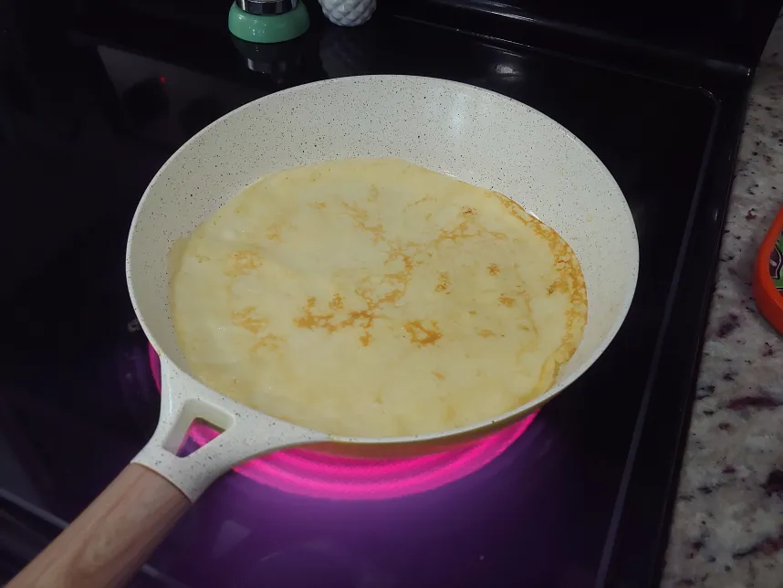
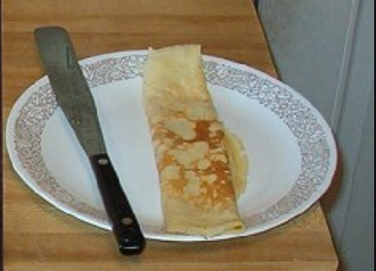

Swedish Pancakes

- ⏲️ Prep time: 10 min
- 🍳 Cook time: 30 min
- 🍽️ Servings: 4
Ingredients
- 3 Eggs, beaten
- 1 tsp Salt
- 1 tbsp Sugar
- 1 cup Flour
- 1 - 2/3 cups Milk
- 6-8 tbsp Butter
Directions
- At medium/low heat begin melting the butter, and continue with beating eggs in large bowl, add salt, sugar, milk, flour and mix.
- Add melted butter while stirring batter.
- Use about ½ cup batter on griddle and tilt until spread evenly over griddle surface.
- When edges of pancake start to firm-up use spatula and free up the outside inch or two to achieve a clean removal for flipping later.
- First side will take about a minute or more the second side will take half that time. Pick up at middle of pancake with spatula then place on plate and fold over. The pancake will then be four layers thick 10" x 2" long. Serve with syrup on top or anything you choose, my wife likes peanut butter and I prefer to spread a little butter on it before adding syrup. Maybe you prefer adding fruits of your choice.

Contribution
- Matt Bogenhagen